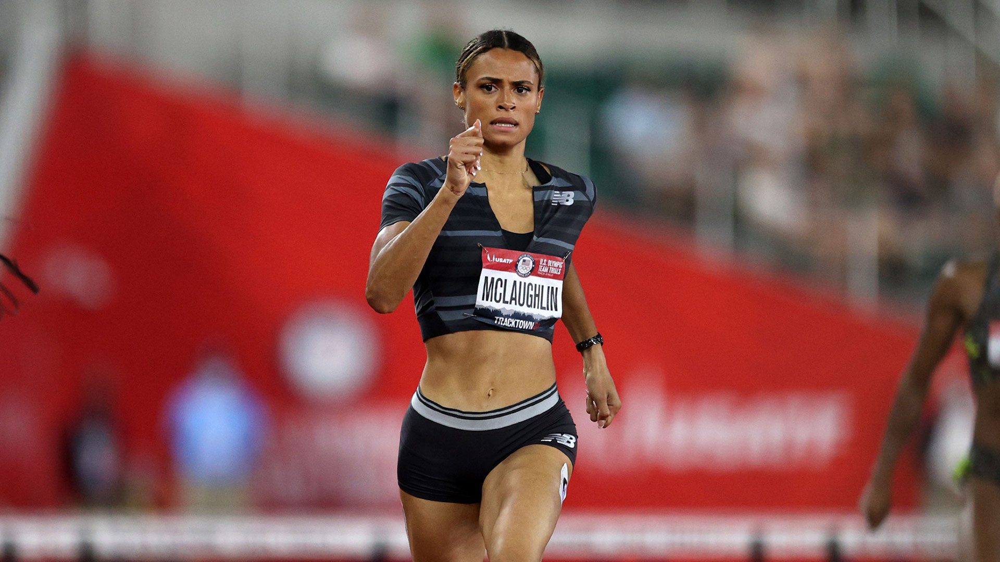
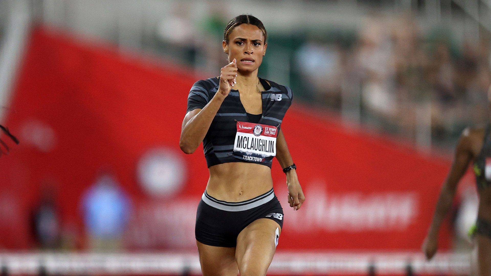
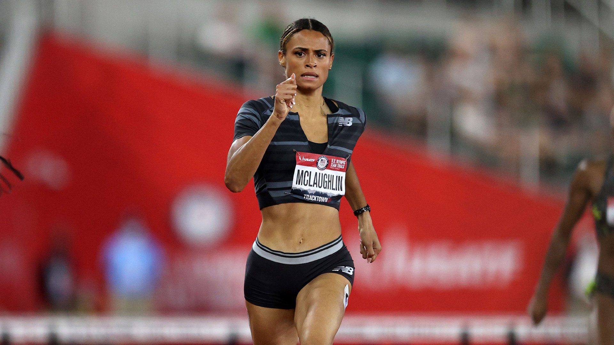

⬆

Легка́ атле́тика — олімпійський вид спорту, який об'єднує спортивні дисципліни, що включають змагання з бігу, стрибків, метань та спортивної ходьби. Найрозповсюдженішими видами легкої атлетики є бігові та технічні дисципліни на стадіоні, біг по шосе, крос та спортивна ходьба.
Результати бігових дисциплін оцінюються з огляду на місце, яке спортсмен посів, або на час, який був ним показаний, на фініші, в той час як переможцем у стрибках та метаннях є атлет, що найдовше або найвище стрибнув, чи найдовше метнув знаряддя за результатами серії спроб. Відносна простота змагань та відсутність необхідності у коштовному обладнанні роблять легку атлетику одним з найпопулярніших видів спорту у світі. Легка атлетика складається, переважно, з індивідуальних дисциплін за виключенням естафетних стартів та змагань, в яких додаються індивідуальні показники спортсменів задля визначення команди-переможця (наприклад, у кросі).
Організовані легкоатлетичні змагання беруть свій початок з 776 до н. е., коли були проведені перші античні Олімпійські ігри. Правила та формат проведення змагань із сучасних легкоатлетичних дисциплін були розроблені у Західній Європі та Північній Америці у 19 та 20 сторіччях, та були згодом перейняті в інших куточках планети. Переважна більшість сучасних найважливіших змагань організовуються та проводяться під егідою керівного органу світової легкої атлетики — Світової легкої атлетики (англ. World Athletics) та її 214 країн-членів.
Легкоатлетичні види формують кістяк змагань на літніх Олімпійських іграх. Крім цього, найголовнішим легкоатлетичним змаганням є Чемпіонат світу з легкої атлетики, що включає змагання з бігових та технічних дисциплін на стадіоні, марафонський біг та спортивну ходьбу. Інші найпрестижніші змагання включають, наприклад, Чемпіонат світу з легкої атлетики в приміщенні, Чемпіонат світу з напівмарафону та змагання серії «Діамантова ліга».
Легка атлетика — один з найдавніших видів спорту. За багато століть до нашої ери деякі народи Азії і Африки влаштовували легкоатлетичні змагання. Але справжній розквіт цього виду спорту настав в Стародавній Греції. Перші Олімпійські ігри давнини, про які збереглись достовірні записи, відбулися в 776 році до н. е. Тоді в програму змагань входив лише біг на 1 стадій (192,27 м). У 724 році до н. е. проводився біг вже на 2 стадія, а ще через чотири роки відбувся перший олімпійський забіг на довгу дистанцію — 24 стадія. Перемога на іграх цінувалася дуже високо. Чемпіонам надавали великі почесті, обирали на почесні посади, в їх честь будували монументи. Великою популярністю в Стародавній Греції користувалися стрибки в довжину і естафетний біг (лампадеріомас), учасники якого передавали один одному палаючий факел. Пізніше в програму Олімпійських ігор були включені метання диска і метання списа, а 708 року до н. е. вперше були проведені змагання з багатоборства — пентатлону, в який входив біг на 1 стадій, метання диска, списа, стрибок в довжину (під час розбігу атлет тримав в руках гантелі масою від 1,5 до 4,5 кг) і боротьба (панкратіон). У 393 році н. е. Олімпійські ігри припинили своє існування у зв'язку з втратою Грецією самостійності та переходом її під владу Римської імперії. Разом з Олімпійськими іграми античності на довгий час зник і грецький ідеал виховання гармонії тіла й духу, фізичної краси й духовного благородства. Більше тисячоліття повинно було пройти, щоб у новій ситуації, тепер вже не на національному, а на міжнародному рівні було відроджено Олімпійські ігри.
У середньовіччі великих змагань з легкої атлетики не проводилося, хоча є відомості, що в святкові дні люди розважалися, змагаючись в метанні каменів, стрибках в довжину і у висоту, в бігу на швидкість. Пізніше в Західній Європі біг, стрибки і метання увійшли в систему фізичного виховання лицарів. Чітких правил змагань в цей період ще не було, тому на кожному змаганні вони встановлювались за домовленістю між спортсменами. Однак поступово правила ставали все більш стабільними. Одночасно вдосконалювалися і легкоатлетичні снаряди. Після винаходу в XIV сторіччі вогнепальної зброї від метання важкого каменю перейшли до штовхання металевого гарматного ядра. Ковальський молот поступово замінили молотом на ланцюгу, а згодом ядро на ланцюгу (на сьогодні — ядро на сталевому дроті з ручкою).
Легка атлетика як вид спорту почала складатися лише наприкінці першої половини XIX ст. Були зафіксовані результати в стрибку з жердиною в 1789 (1,83 м, Д. Буш, Німеччина), в бігу на одну милю в 1792 (5.52,0, Ф. Павелл, Велика Британія) та в бігу на 880 ярдів в 1830 (2.06,0, А. Вуд, Велика Британія), в стрибках у висоту в 1827 (1,575, А. Вілсон, Велика Британія), в метанні молота в 1838 (19,71 м, Район, Ірландія), в штовханні ядра в 1839 (8,61 м, Т. Каррадіс, Канада) тощо. Вважається, що початок історії сучасної легкої атлетики поклали змагання в бігу на дистанції близько 2 км серед учнів коледжу в англійському Рагбі в 1837, після чого такі змагання стали проводитися в інших навчальних закладах Англії. Пізніше до програми змагань стали включати біг на короткі дистанції, біг з перешкодами, метання ваги, а в 1851 — стрибки в довжину і висоту з розбігу. У 1864 між університетами Оксфорда і Кембриджа були проведені перші змагання, які сталі надалі щорічними та започаткували традиційні двосторонні матчі, як формат легкоатлетичних змагань.
У 1865 був заснований Лондонський атлетичний клуб, що популяризував легку атлетику, організовував змагання та наглядав за дотриманням аматорського статусу спортсменів. Вищий орган британського легкоатлетичного спорту — Любительська атлетична асоціація, — що об'єднала всі легкоатлетичні організації Британської імперії, був організований в 1880. Дещо пізніше, ніж в Англії, стала розвиватися легка атлетика в США (в 1868 був організований легкоатлетичний клуб в Нью-Йорку, а 1875 — студентський спортивний союз), яка швидко стала популярною в університетах. Це забезпечило в наступні роки (до 1956) провідне становище американських легкоатлетів у світі. У 1880—1890 в багатьох країнах світу були організовані любительські легкоатлетичні асоціації, які об'єднали окремі клуби, ліги і отримали права вищих органів з легкої атлетики.